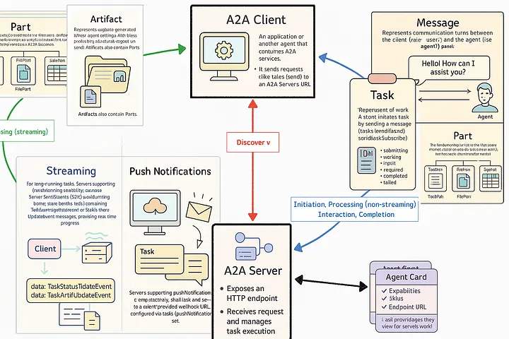
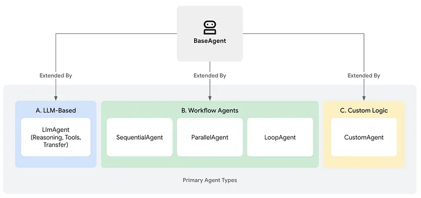
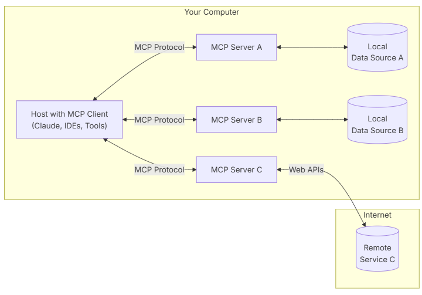
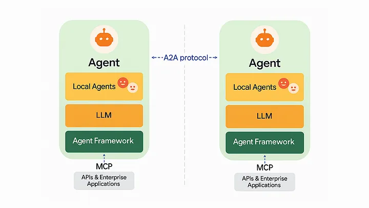
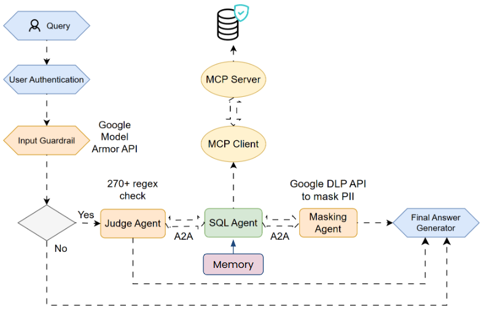

Day 6: Scaling Agents: Architectures with Google ADK, A2A, and MCP
Do you think you know MCP?
Welcome to Day 6 of the 7-Day Agents in Action Series.
Hi again!
I’m Hamza, joined once again by Jaya — and today, we’re stepping into the build phase.
If you like this series, we’d love you to have you in our course for AI Agents for Enterprise course on Maven and be a part of something bigger and join hundreds of builders to develop enterprise level agents.
Now back to the course:
Over the last five days, we’ve set the foundation. We explored how agents evolved from GenAI (Day 1), how they think and reason (Day 2), how they remember through different types of memory (Day 3), how they access real-time knowledge via retrieval (Day 4), and how they extend their intelligence beyond text through multimodality (Day 5).
But agents don’t live in isolation. In the real world, they need to talk to other agents, access external tools, and operate safely at scale.

Source: Agent Communication example
In this article, we will explore how Google is shaping this with its Agent Development Kit (ADK), the Agent-to-Agent (A2A) protocol, and the Model Communication Protocol (MCP). These are not just tools - they represent a shift in how agents are designed, orchestrated, and deployed in real-world systems.
We will also unpack how these components work together to build scalable, modular, and secure agentic infrastructure.
Building Agents with Google Agent development kit (ADK)
Source: Google Agent Development Kit
Let’s start with the question behind every serious AI project:
How do we go from a clever demo to a reliable, reusable agent?
Because here’s the truth: most GenAI agents today are just dressed-up prompts. They might look smart in a single interaction, but they break down quickly when you need structure, memory, collaboration, or consistency.
That’s where Google’s Agent Development Kit (ADK) comes in, a production-grade framework built to help you move beyond hacks and experiments. ADK gives you the building blocks to create agents that can plan, act, and scale — not just respond.
At its core is the BaseAgent class - a flexible template you can extend to define how your agent reasons, remembers, and decides what to do next. But ADK goes much further: it supports tool use, multi-agent coordination, streaming, memory modules, and evaluation, all with a developer experience that’s actually pleasant.

Source: https://google.github.io/adk-docs/agents/
Think of ADK as your workbench for real-world agent systems.
Not just one chatbot. Not just one clever workflow. A foundation for building intelligent systems that can collaborate, adapt, and operate with guardrails in place.
Core Pillars of ADK
ADK provides capabilities across the entire agent development lifecycle:
- Multi-Agent by Design – Modular, hierarchical agent composition
- Model Flexibility – Works with Gemini, Vertex AI, LiteLLM, and more
- Tool Ecosystem – Supports MCP tools, LangChain, LlamaIndex, etc.
- Built-in Streaming – Audio/video streaming for multimodal interaction
- Flexible Orchestration – Sequential, parallel, loop, or dynamic flows
- Dev Experience – Local CLI + visual UI for testing and debugging
- Built-in Evaluation – Assess final outputs and intermediate steps
- Easy Deployment – Container-ready for any environment
For more information and docs on ADK, reference the github: https://google.github.io/adk-docs/
Acting in the World: Model Context Protocol (MCP)
Now that you’ve built an agent with ADK, how do you let it interact with the real world?
Imagine your agent needs to call a Stripe API, run a SQL query, or access your file system. These are straightforward for a human developer. But for a language model, even a capable one, public APIs are inaccessible without help.
This is where the Model Communication Protocol (MCP) comes in. MCP acts as a standardized bridge between agents and tools. It wraps APIs, databases, and local services in a format that agents can understand and safely call. Think of it like an adapter — instead of teaching an agent the details of every single API, MCP lets you plug in pre-wrapped tools that just work.
In a nutshell, what MCP does is:
- Standardizes agent-tool communication
- Secure external access
- Plug-and-play tool integration
Core Components of MCP
Following are the core components of MCP:
- MCP Hosts: Programs like Claude Desktop, IDEs, or AI tools that want to access data through MCP
- MCP Clients: Protocol clients that maintain 1:1 connections with servers
- MCP Servers: Lightweight programs that each expose specific capabilities through the standardized Model Context Protocol
- Local Data Sources: Your computer’s files, databases, and services that MCP servers can securely acces
- Remote Services: External systems available over the internet (e.g., through APIs) that MCP servers can connect to

Source: https://modelcontextprotocol.io/docs/getting-started/intro
How is MCP Different from Standard API?
The main difference between MCPs and APIs lies in who they’re meant for:
- APIs are built for developers. They expose data or services, but they assume the person using them knows how to write code, format requests, handle errors, etc.
- For an AI agent (like an LLM) to use a public API, it needs a wrapper built by a developer first, which explains:
- how to call the API
- what the input/output should look like
- and how to handle the response.
MCPs are designed for LLMs to call APIs without extra setup, whereas APIs require a developer to build that tool manually. MCPs act as wrappers around APIs, helping LLMs understand how to call them.
MCP Limitations
While MCP is a standard to call tools for an LLM instead of formatting data for an API, it also has it’s own limitations:
- Limited responses: If an API only returns 100 results per call (e.g., Stripe transactions or customers), an MCP won’t know to paginate, so it will most likely miss key data.
- High costs for historical data: MCPs make on-the-fly API requests, so pulling 12 months of data (if it can figure out how to) eats up context window + cost fast.
- You can only use one MCP at a time, meaning LLMs struggle to combine multiple data sources.
Despite the limitations, MCP is a powerful step toward turning agents into doers, not just talkers.
Working in teams: Agent2Agent (A2A) Protocol
What happens when you have not just one agent, but many?
Let’s say one agent specializes in retrieving data, another in summarizing it, and a third in masking sensitive content. You now have a team. But how do they talk to each other? That’s the problem A2A (Agent-to-Agent Protocol) solves.
A2A is a communication protocol that allows agents to collaborate securely, predictably, and efficiently — all without sharing memory or internal reasoning. It’s like giving each agent a walkie-talkie and shared task language, so they can coordinate without stepping on each other’s toes.
Built on familiar web standards like HTTP and JSON-RPC 2.0, A2A allows agents to:
- Send tasks and receive results in structured formats
- Handle long-running operations
- Work across modalities like text, video, or even form inputs
- Securely authenticate with each other in enterprise environments
Instead of coding logic that chains agents together manually, A2A lets each agent operate independently but still collaborate like members of a team.

A2A Design Principles
A2A is an open protocol that provides a standard way for agents to collaborate with each other, regardless of the underlying framework or vendor. While designing the protocol with our partners, we adhered to five key principles:
- Agent-first – Enables true collaboration between agents, even without shared memory or tools
- Standards-based – Built on HTTP, SSE, and JSON-RPC for easy integration
- Secure by Default – Supports enterprise-grade auth aligned with OpenAPI standards
- Long Task Support – Handles everything from fast actions to multi-hour human-in-the-loop workflows
- Modality Agnostic – Designed for text, audio, video, and more — not just chat
Putting It All Together: A Real-World Flow
Let’s walk through a real system that combines ADK, MCP, and A2A. Imagine a user sends a request:
“Find our top customers from last quarter and make sure no PII is exposed.”
Here’s how it plays out:
- A client sends a request to your A2A server
- A2A routes the task to a security pipeline before executing it:
- Input Validation Layer (outside LLM)
- Model Armor checks for: Prompt injection, Malicious sources, DDoS, web attacks
- Agent Judge (ADK agent with tool access): Uses 270+ regex rules to detect anomalies and if found conversation is terminated
- A2A then calls call_sql_agent()
- This invokes the SQL Agent (ADK agent using MCP tools): Infers database schema, Constructs SQL query, Returns result
- Output is sent to the Mask Agent:
- Uses Google Cloud DLP API to redact/mask sensitive data (e.g., names, IDs)
- Final masked result is returned: MCP → ADK → A2A → Client

Next Up: Your First Full Agent System - Begins 8th October
You have seen the pieces — planning, memory, retrieval, tools, collaboration. Now it’s time to bring it all together.
In the final day of this series, we will build a complete agent from scratch - one that thinks, remembers, retrieves, and takes action. You will learn how to wire up the control loop, plug in external tools, and coordinate across agents like a real system architect.
Ready to ship something real?

If you like this series, you should check out my AI Agents for Enterprise course on Maven and be a part of something bigger and join hundreds of builders to develop enterprise level agents.